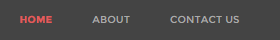
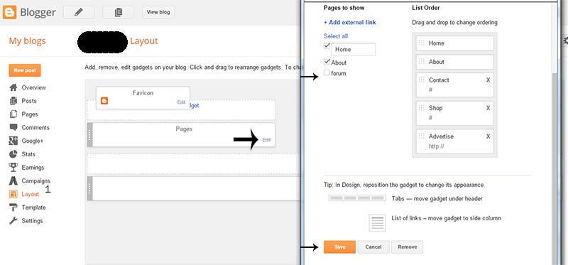
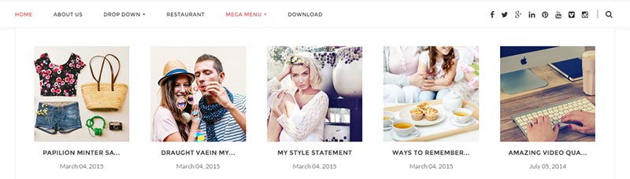
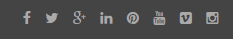
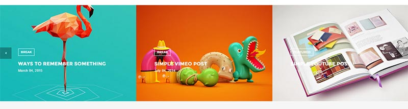
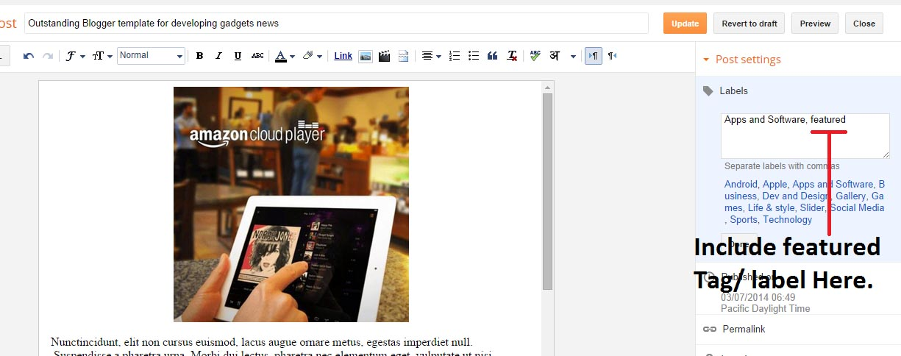

“Gridz Blogger Template” Documentation by “ThemeXpose” v1.0
Created: 30/06/2015
By: ThemeXpose
xposetheme@gmail.com
Thank you for Downloading my theme. If you have any questions that are beyond the scope of this help file, please feel free to email via my user page contact form. Thanks so much!
If you have any problem about this template then please visit ThemeXpose.com
Note : Premium and lifetime support only delivered to Full version buyers.
But this is only free version (Free Template Will Contain Non Removable Credits and limited features).
It is forbidden to remove the credit link due to the elimination of the credit links will make your blog to redirect ThemeXpose Official site. For those who want to remove can pay $ 5.95.
Buy our Full Version and get:
1.Remove Footer credits
2.One time payment
3.For Unlimited Domains
4.Lifetime Premium Support
5.No Encrypted Scripts
6.Lifetime Template Updates
7.And Much More....
Buy now from ThemeXpose.com
Table of Contents
- Installation
- Upload Logo
- Setting up the menu
- Add Social Links
- Setting up the slider
- Enable Mobile Template
- Enable Full Feed
- Enable Search Preference
- Author Description
- Instagram Widget
- Installation - top
- Upload Logo- top
- Setting up the menu - top
- On Blogger Dashbord Click Template
- Click Edit HTML
- (Top Menu) Scroll down and Find this Code :
<ul class='navlist'> <li><a href='/'>Home</a></li> <li><a href='/p/about.html'>About us</a></li> <li><a href='#'>Drop Down</a> <ul class='sub-menu'> <li><a href='/search/label/Shooter'>Minimal</a></li> <li><a href='#'>Sub Menu with Subs</a> <ul class='sub-menu'> <li><a href='#'>Feminist</a></li> <li><a href='#'>Persona</a></li> <li><a href='#'>Expose</a></li> </ul> </li> <li><a href='#'>Powergame</a></li> <li><a href='#'>Fashion</a></li> </ul> </li> <li><a href='#'>Restaurant</a></li> <li class='megamenu col-5'><a href='#'>Mega menu</a> <script class='java' type='text/javascript'>//<![CDATA[ var numposts = 5; var outerclass = "sub-menu"; var starttag = "<li>"; var endtag = "</li>"; var intag = "div"; //]]> </script> <script class='java' src='/feeds/posts/default/-/LABLE?alt=json-in-script&callback=labelthumbs' type='text/javascript'/> </li> <li><a href='#'>Download</a></li> </ul>
- Change # with yours URL link
- Add Social Links - top
- On Blogger Dashbord Click Template
- Click Edit HTML
- (Top Menu) Scroll down and Find this Code :
<div class='share-box'> <a class='social-facebook' href='#' target='_blank'><i class='fa fa-facebook'/></a> <a class='social-twitter' href='#' target='_blank'><i class='fa fa-twitter'/></a> <a class='social-gplus' href='#' target='_blank'><i class='fa fa-google-plus'/></a> <a class='social-linkedin' href='#' target='_blank'><i class='fa fa-linkedin'/></a> <a class='social-pinterest' href='#' target='_blank'><i class='fa fa-pinterest'/></a> <a class='social-youtube' href='#' target='_blank'><i class='fa fa-youtube'/></a> <a class='social-vimeo' href='#' target='_blank'><i class='fa fa-vimeo-square'/></a> <a class='social-instagram' href='#' target='_blank'><i class='fa fa-instagram'/></a> </div>
- Change # with yours URL link
- Setup slider section - top
- Enable Mobile Template - top
- Enable Full Feed - top Access Settings menu and choose Other settings. Click drop-down list at Allow Blog Feed option, then choose Full. After that, click Save settings button at the top right corner.
- Enable Search Preference - top To improve your blog SEO, please enable Blogger Search Preferences. Access your Settings menu, choose Search preferences tab and click Edit link on Meta tags section
- Author Description - top
Now you have Gridz Blogger Template. You Can Follow This Steps To Upload Your Blogger Template To Blogger Platform. First Login to your Blogger DashBoard by Using Your Google Username And Password from Here.
Then follow these steps:
1. On Blogger Dashboard Click Template.
2. Click Backup/Restore button (Top Right).
3. Click Choose ( Browse..) File button. Find where the “Gridz-Blogger-Template.xml” file location.
4. Then Click Upload.
Note: Before Uploading This Template Mobile Blogger Template Must Enable to make Blogger Customize Work
Access your blog Layout > click Edit link on Header widget
 To Edit Top Menu in this theme you can follow this step:
1. Go to -> Blogger Dashboard- >layout -> Pages - > press edit button.
2. Now choose ( check mark ) those pages you want to show on menu and press save. You can also add the external link just press ADD external Link and add you link then save it..
To Edit Menu in this theme you can follow this step:
MEGA MENU

In above you will see this below mention code , that is for MEGA MENU
<script class='java' type='text/javascript'>//<![CDATA[ var numposts = 5; var outerclass = "sub-menu"; var starttag = "<li>"; var endtag = "</li>"; var intag = "div"; //]]></script> <script class='java' src='/feeds/posts/default/-/LABEL?alt=json-in-script&callback=labelthumbs' type='text/javascript'/>
1. Change the word LABEL with your label for posts
2. Change the number "5" inside numposts = 5; with your needed number of posts
Add top Social Links

How to Setup The slider section
To Setup Slider section you need to add "featured" Tag/Label into your Blogger Post.
Note : only use "featured" not "Featured".Its Case sensitive.
Example :
 Main Points - You blog Must be public and your blog feed must be set to full Otherwise featured post section doesn't work
After you apply mobile version for this template, Advance Editor will be disabled. This is official bug of Blogger. So, please make sure, you used Advance Editor to change all settings you want before do this step.
As default, Blogger will use its own template for you blog on mobile. So if you want to use Gridz template on mobile devices, please enable it first.Access your Template menu and click on Gear button of Mobile template.
 In Choose mobile template window, check "No. Show desktop template on mobile devices." option, then click Save button.
In Choose mobile template window, check "No. Show desktop template on mobile devices." option, then click Save button.


Next, check Yes option, then type your Blog Description into the text field and click Save changes.

Add author info on sidebar (About me)
You Can See that sidebar area have About me section. To Edit About me in this theme you can follow this step:
1. Go to -> Blogger Dashboard- >layout -> About me- > press edit button.
2. Open folder plugin, copy and paste content of file aboutme.txt to widget content, replace the image link to your image and description.
Author info on post page
Author image and name automatically fetch from Google account.
How to edit description and social icons of author , you can follow this step:1. On Blogger Dashbord Click Template
2. Click Edit HTML
3. Scroll down and Find this Code :
<div class='author-content'> <p>Phasellus facilisis convallis metus, ut imperdiet augue auctor nec. Duis at velit id augue lobortis porta. Sed varius, enim accumsan aliquam tincidunt, tortor urna vulputate quam, eget finibus urna est in augue.</p> </div> <div class='author-social'> <a href='#'><i class='fa fa-facebook'/></a> <a href='#'><i class='fa fa-twitter'/></a> <a href='#'><i class='fa fa-dribbble'/></a> <a href='#'><i class='fa fa-google-plus'/></a> </div>
4. Change Links with yours Social URL link
Once again, thank you so much for purchasing this theme. As I said at the beginning, I'd be glad to help you if you have any questions relating to this theme. No guarantees, but I'll do my best to assist.